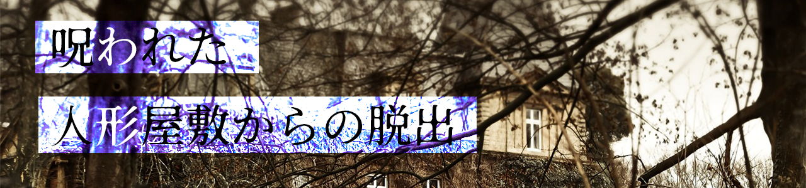

全ステージ クリア！
扉の先には、部屋の主が立っていた。物置で見つけた写真に写っていた子供の面影がある。
部屋の主に屋敷の使用人が声を掛ける。
「もう満足なさいましたか？」
「ああ、もういい。君たち、よくここまで辿り着いたね、おめでとう」
「突然閉じ込めるようなことをしてごめんね？
その写真を見たらわかると思うけど、ボクの家には人形がたくさんあるんだ。父さんも母さんも人形好きでね。
この屋敷には人形を盗もうとする輩がよく侵入するから、君たちもそうなんじゃないかと疑ってしまって。
怖がらせて早く帰ってほしかったんだ」
「でも、違ったようだね。君たちは人形を盗む気などないようだ」
どうやら屋敷の主の誤解を解けたらしい。
これで友人も明日の朝、無事家に帰ることができるだろう。
「この屋敷は私が探してた心霊スポットではなかったけど、すっごくワクワクしたな！！」
「これもキミの手助けのおかげだよ！次も何かあったら頼りにしてるからね！」
脱出成功！遊んでくれてありがとう！
Special Thanks
リアル脱出ゲームとは
2004年に発表されたネットで爆発的に盛り上がった「脱出ゲーム」を、そのフォーマットそのままに現実世界に移し替えた大胆な遊びが「リアル脱出ゲーム」。マンションの1室や廃校、廃病院、そして東京ドームや六本木ヒルズなど、様々な場所で開催され、2007年に初開催して以降、現在までで累計820万人以上を動員。日本のみならず上海、台湾、シンガポールやサンフランシスコなど全世界で参加者を興奮の渦に巻き込み、男女問わずあらゆる世代を取り込む、今大注目の体験型エンターテインメント。
このゲームの企画者
企画：全員
ストーリー構成・ラストページイラスト：ゆきみ
デザイン・3問目イラスト・デバッグ：青林檎
サイト作成：tomokazu
謎作成：りゅーた